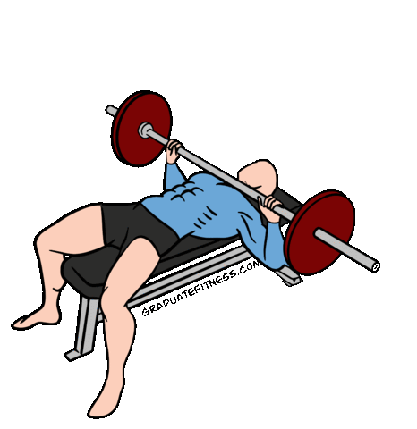
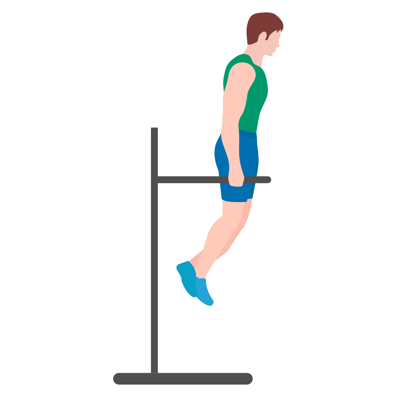

1.Push Ups
The ordinary pushup provides 61 percent chest muscle activation. That’s significantly less than the bench press, but pushups offer convenience and triple the muscle-building benefits:they strengthen your chest, arms, and shoulders. Get the most from your pushups by paying close attention to your form. Tighten your abdominals, keep your back flat, your neck in alignment with your spine, and keep your elbows close to your sides. With your hands directly under your shoulders, lower yourself slowly and with control. Lastly, press up.The only equipment you need is the mirror, where you can admire your newly toned chest!
2.Bench Press
Position yourself on the bench with your feet firmly on the ground and your back flat (the bar should be directly over your eyes, and your head, shoulders, and buttocks should be on the bench). Grasp the barbell with palms forward and thumbs wrapped around the bar. Move the bar into starting position, with help from a spotter if needed. Position the bar over your chin or upper chest, keeping your elbows and wrists straight. Inhale and lower the bar slowly until it touches your chest below your armpits. As you lower, flare your elbows out slightly. Next, exhale and press the bar up, keeping your wrists straight and your back flat.
3.Dips
Grasp the parallel dip bars firmly and lift your body. Keep your elbows straight, your head in line with your trunk, and your wrists in line with your forearms. Bring one leg across the other to stabilize the lower part of your body, and pull in your abs. Exhale, and bend your elbows to lower your body. Keep your elbows near your sides. Your legs should be directly under your body to avoid tilting or swinging. Lower yourself until your elbows are at a 90-degree angle and your upper arms are parallel with the floor. Keep your wrists straight. Pause, and then straighten your elbows, pushing into the bars with your hands, and return to starting position. Keep your body vertical and your wrists straight.